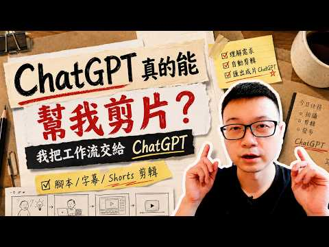

用 Codex 協助剪影片：從素材索引到 QA 的工作流程

影片封面：Wilson說給你聽；點圖前往 YouTube。
AI 輔助剪輯的核心思維
在數位內容創作的領域中，時間是最昂貴的資源。許多創作者常誤以為引入 AI 工具是為了完全取代人工判斷，但實際上，更高效的策略是將 AI 視為協作夥伴，而非替代者。透過 Codex 搭配 Skill 的機制，我們能建立一套穩定且可重複使用的自動化工作流。這套流程的重點不在於讓 AI 一次性完成所有任務，而在於將複雜的剪輯工程拆解為多個明確的階段，讓每個階段都能發揮其專長，從而降低錯誤率並提升整體產出效率。
定義規則與建立素材索引
要讓 AI Agent 如 Codex 有效運作，首要步驟是撰寫清晰的 Skill。Skill 的本質就是將你的個人風格、剪輯習慣與技術規範轉化為機器可理解的指令。不要只給模糊的提示，而應具體說明節奏偏好、轉場方式甚至色彩調性。同時，建立結構化的素材索引至關重要。清楚的標籤與目錄結構可以幫助 AI 找到適合的素材。透過將影片素材分類並加上詳細的描述性索引，有機會縮短搜尋素材的時間，這是自動化流程順暢運作的基礎。
內容規劃與獨立 QA 機制
在正式進入剪輯環節前，利用 AI 協助生成逐字稿、大綱與分鏡腳本，能有效釐清敘事邏輯。然而，最關鍵的步驟在於設立獨立的 QA（品質保證）階段。許多創作者容易忽略這一點，導致最終成品出現邏輯斷層或語意錯誤。將檢查環節獨立出來，意味著讓 AI 扮演嚴苛的審查者角色，專門針對前述生成的腳本與初步剪輯內容進行交叉比對。這種分離式設計有助於發現遺漏，但不能保證找出所有錯誤；仍需人工檢查內容、字幕與畫面。
自動化上片與流程優化
當內容製作完成後，最後一環是將影片上傳至 YouTube。透過整合 YouTube API，Agent 可以自動處理標題、描述、標籤以及縮圖設定，甚至根據預設規則進行發布。這不僅節省了手動操作的時間，也確保了發布格式的一致性。值得注意的是，自動化並非一勞永逸。建議定期回顧 AI 的輸出結果，特別是那些需要高度創意或情感共鳴的部分，保留人工介入的空間。透過不斷調整 Skill 參數與優化素材索引，你的 AI 工作流會隨著時間推移變得更加精準與高效。
常見問題與總結
Q: AI 剪輯能否完全取代專業剪輯師？ A: 目前階段，AI 更適合處理重複性高、規則明確的任務，如基礎剪接、字幕生成與上片流程。對於需要深刻情感表達或複雜敘事結構的部分，仍需人工主導。
Q: 如何開始建立自己的 Skill？ A: 從記錄你過去最滿意的三個影片特徵開始，將其轉化為具體的文字指令，並逐步測試與修正。
總結而言，利用 Codex 進行 AI 剪片工作流的核心在於「結構化」與「分工」。透過明確的 Skill 定義、完善的素材索引以及獨立的 QA 機制，創作者能將重複性勞動自動化，從而將精力集中在更具創造力的內容規劃上。這不僅是技術的升級，更是創作思維的轉變。
參考影片：我用 Codex 幫我剪片：AI Agent 工作流公開。文章依影片公開資訊整理，以本機 Ollama 撰寫並經編輯校對。